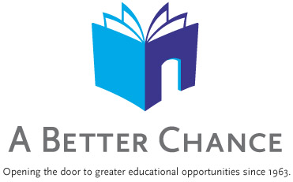
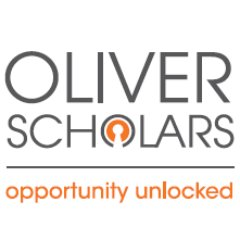

We have provided some information about programs that will enhance your child's education and provide them with many opportunities.
NYU programs

New York University offers a variety of high school programs for scholars. Most of the programs are during the summer but there are options for weekend workshops during the spring and fall. Some programs are free others while others require tuition. Some free programs they provide include
- College and career lab
- Computer science for cybersecurity
- College access
- Science and engineering
- Hunter college
- Pace University
- Columbia university
- Hunter College
- Fordham university Go to this website for college programs outside of Ny. College Transitions
For more information about NYU high school programs got to the website below
NYU ProgramsA Better Chance
A Better Chance offers economically disadvantaged people of color the opportunity to attend independent college preparatory schools. With over 96% of graduates attending college immediately after high school, A Better Chance is succeeding in reaching their goal of increasing the number of young people of color in positions of leadership and responsibility in America. Go to the website below to learn about eligibility for the program and how to apply.
A Better ChancePrep for Prep

Prep for Prep is a leadership and gifted educational program, that targets high achieving minority students in New York. They help transition New York scholars in public schools to leading independent and selective institutions of higher education.
Prep for PrepOliver scholars
Similar to the ones above, the Albert oliver program prepares intelligent scholars of a black and Latino background to enter top independent schools and prestigious colleges. They provide students critical support for them to realize their full potential and give back to the world. For more information click the link below. Oliver scholars
Teak Fellowship

The teak fellowship is a free NYC based program that helps talented students of low-income families. They train middle school students by offering intensive after school and summer classes, which helps them get into the nations selective high schools and colleges. They ensure that their scholars thrive in their high schools and graduate college, ready to pursue their dream and impact the world positively. For more information click the link below. Teak Fellowship
Collgees That Offer Programs for High Schoolers
These colleges have some great programs available for high school scholars during the summer. Search high school programs for these colleges to find more information
Inside schools
Inside schools provides guidance about programs available from pre-k to high school. It classifies information by borough, interest and grade. It's a great resource to learn which programs are available in your community and are based on your interest. Go to Inside schools to explore.